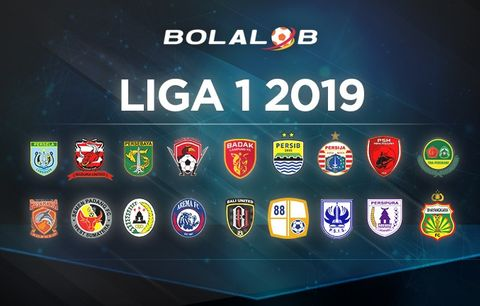

Temukan informasi seputar liga Indonesia disini.

Liga 1 (Shopee Liga 1 untuk alasan sponsor), sebelumnya bernama Indonesia Super League (bahasa Indonesia: Liga
Super Indonesia) adalah liga profesional level teratas dalam Sistem liga sepak bola di Indonesia. 18 klub bersaing
untuk menjadi juara dengan sistem kompetisi promosi dan degradasi.
PT. Liga Indonesia Baru adalah operator resmi Liga 1 dengan masing-masing 18 klub peserta sebagai pemegang saham
utamanya. Liga berlangsung dalam satu tahun (kalender) penuh sejak Maret sampai dengan November. Total 34 pertandingan
untuk setiap peserta liga yang dimainkan secara kandang dan tandang (home and away).
Kompetisi ini dibentuk oleh PSSI pada tahun 2008 sebagai perwujudan kompetisi profesional sepak bola pertama di
Indonesia, yang sebelumnya hanya berkompetisi secara amatir dan masih mengandalkan APBD sebagai modal berkompetisi.
Sebanyak 32 klub telah berpartisipasi sejak musim perdananya pada tahun 2008 dan tujuh tim diantaranya pernah menjadi
juara, yaitu Persipura Jayapura (2008-09, 2010-11, 2013), Arema FC (2009-10), Sriwijaya FC (2011-12), Persib Bandung
(2014), Bhayangkara FC (2017), Persija Jakarta (2018),dan Bali United (2019).